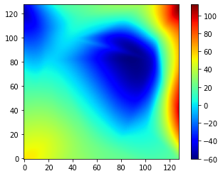
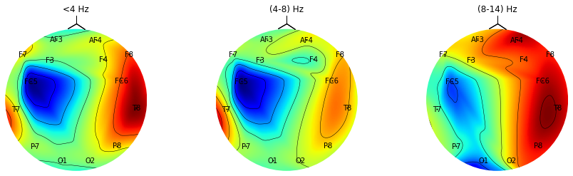
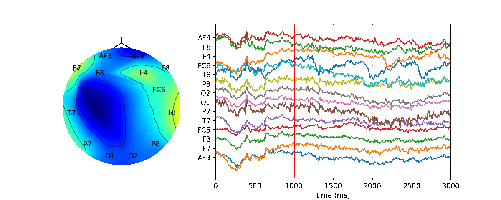

Generating Topographical Map
Generating Spatio-Temporal Map
Map at every time point x(t)
At t=0, X[0]
import spkit as sp
import matplotlib.pyplot as plt
X,ch_names = sp.load_data.eegSample()
fs=128
# get the locations of electrodes on 2D plane according to 10-20 system
# "pos" for channels as in list ch_names
# ch_names = ['AF3','F7','F3','FC5','T7','P7','O1','O2','P8','T8','FC6','F4','F8','AF4']
pos, ch1 = sp.eeg.s1020_get_epos2d_(ch_names, reorder=False)
Zi = sp.eeg.TopoMap(pos,X[0],res=128, showplot=True,axes=None,contours=True,showsensors=True,
interpolation=None,shownames=True, ch_names=ch_names,showhead=True,vmin=None,vmax=None,
returnIm = False,fontdict=None)
plt.show()

plt.imshow(Zi,cmap='jet',origin='lower')

Map at every time point x(t)
At t=0, X[0] with colorbar
import numpy as np
import matplotlib.pyplot as plt
import spkit as sp
X,ch_names = sp.load_data.eegSample()
# get the locations of electrodes on 2D plane according to 10-20 system
# "pos" for channels as in list ch_names
# ch_names = ['AF3','F7','F3','FC5','T7','P7','O1','O2','P8','T8','FC6','F4','F8','AF4']
pos, ch1 = sp.eeg.s1020_get_epos2d_(ch_names, reorder=False)
Zi,im = sp.eeg.TopoMap(pos,X[0],res=128, showplot=True,axes=None,contours=True,showsensors=True,
interpolation=None,shownames=True, ch_names=ch_names,showhead=True,vmin=None,vmax=None,
returnIm = True,fontdict=None)
plt.colorbar(im)
plt.show()

im = plt.imshow(Zi,cmap='jet',origin='lower')
plt.colorbar(im)
plt.show()

Generating Spatio-Spectral Map
For Three different frequency Bands
fBands =[[4],[4,8],[8,14]]
Px = sp.eeg.RhythmicDecomposition(X,fs=128.0,order=5,Sum=True,Mean=False,SD=False,fBands=fBands)[0]
Px = 10*np.log10(Px)
fig = plt.figure(figsize=(15,4))
ax1 = fig.add_subplot(131)
Zi = sp.eeg.TopoMap(pos,Px[0],res=128, showplot=True,axes=ax1,ch_names=ch,vmin=None,vmax=None)
ax1.set_title('<4 Hz')
ax2 = fig.add_subplot(132)
Zi = sp.eeg.TopoMap(pos,Px[1],res=128, showplot=True,axes=ax2,ch_names=ch,vmin=None,vmax=None)
ax2.set_title('(4-8) Hz')
ax3 = fig.add_subplot(133)
Zi = sp.eeg.TopoMap(pos,Px[2],res=128, showplot=True,axes=ax3,ch_names=ch,vmin=None,vmax=None)
ax3.set_title('(8-14) Hz')
plt.show()
Note that colorbar is not shown, and power in each band has different range 
Generating Dynamic Spatio-Spectral Map
According to Parseval’s theorem, energy in time-domain and frequency domain remain same, so computing total power at each channel for 1 sec with 0.5 overlapping
%matplotlib notebook
N = 128
skip = 32
diff = 50
nCh = X.shape[1]
extra_win = 3
tx = 1000*np.arange(X.shape[0]+extra_win*N)/fs
fig, (ax1, ax2) = plt.subplots(1, 2, figsize=(10,4),gridspec_kw={'width_ratios': [1,2]})
for i in range(0,len(X)-N,skip):
ax1.clear()
# ee = np.sqrt(np.abs(X[i:i+N,:]**2).sum(0)) #RMS
# ee = np.abs(X[i:i+N,:]**2).sum(0)) #Energy
#ee = np.log10(np.abs(X[i:i+N,:]**2).sum(0))/N + 1) #Power(dB) +1 keeps avoiding huge negative values
ee = np.abs(X[i:i+N,:]**2).sum(0)/N #Power
_ = sp.eeg.TopoMap(pos,ee,res=128, showplot=True,axes=ax1,contours=True,showsensors=True,
interpolation=None,shownames=True, ch_names=ch_names,showhead=True,vmin=None,vmax=None,
returnIm = False,fontdict=None)
ax2.clear()
if X.shape[0]>i+extra_win*N:
ax2.plot(tx[i:i+extra_win*N],X[i:i+extra_win*N,:] + diff*np.arange(nCh))
else:
ni = X[i:-1,:].shape[0]
ax2.plot(tx[i:i+ni],X[i:-1,:] + diff*np.arange(nCh))
ax2.set_yticks(diff*np.arange(nCh))
ax2.set_yticklabels(ch_names)
ax2.set_xlabel('time (ms)')
ax2.set_xlim([tx[i],tx[i+extra_win*N]])
ax2.grid(alpha=0.4)
ax2.axvline(tx[i+N],color='r')
fig.canvas.draw()
